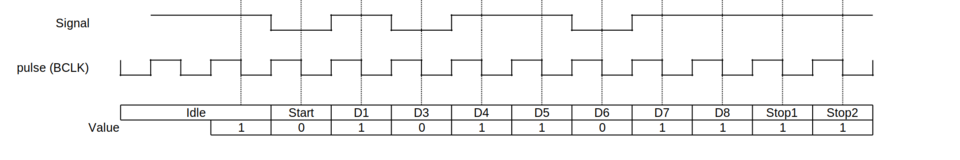
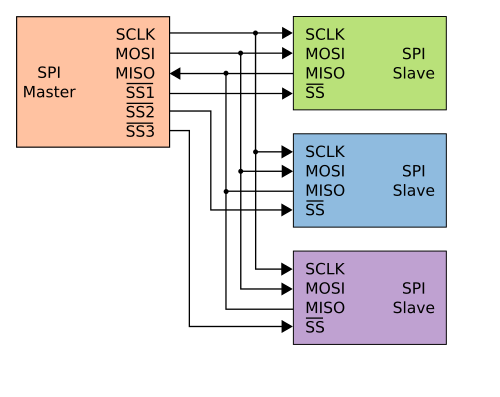
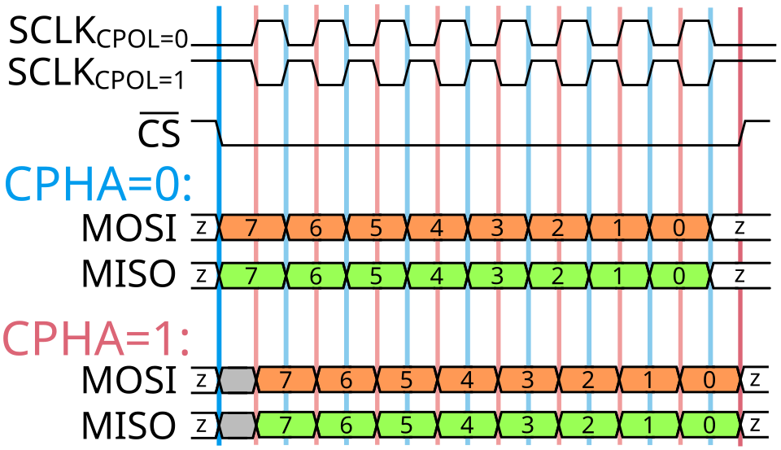
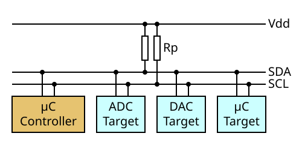
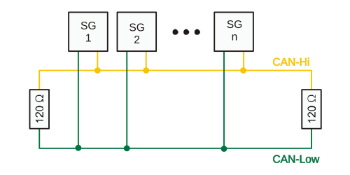
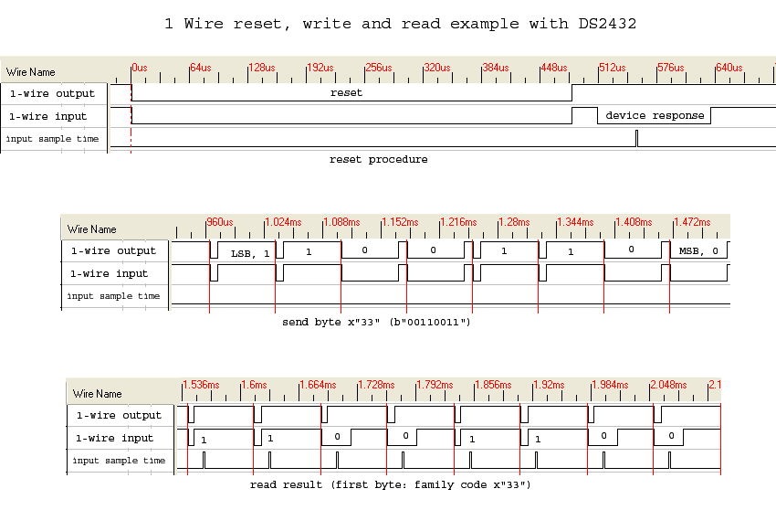

芯片之间的对话
在一个嵌入式系统中，微控制器（MCU）需要和传感器通信获取温度数据，和存储芯片交换配置信息，和显示屏传输图像帧，和另一块板卡同步控制指令。每一条数据的传递，都依赖某种明确的"语言规则"——这就是通信协议。
你可能会觉得，选个协议不就是查查参数、抄个接线图吗？但当你的 I2C 总线上挂了 8 个传感器、信号开始莫名丢数据时；当你需要在一条 100 米长的工业总线中抗住电机的电磁干扰时；当你只有一根 GPIO 引脚可用、却要读出温度传感器的数据时——理解协议的底层原理就成了唯一的出路。
这篇文章会从最基础的问题出发：两块芯片之间，0 和 1 到底是怎么跑到对方的引脚上去的？我们逐一拆解 UART、SPI、I2C、CAN、RS232 和 1-Wire 这六种经典协议，覆盖物理层电气特性、数据帧格式、错误处理机制，最后给出工程选型的决策框架。
UART（Universal Asynchronous Receiver/Transmitter，通用异步收发器）可能是人类历史上使用最广泛的串行通信方式。它的核心思想极其简单：两根线，一根发送（TX），一根接收（RX），双方约定好速率，然后一个 bit 一个 bit 地传。
关键在于"异步"这两个字。UART 没有时钟线。发送方和接收方各自有一颗时钟晶振，它们必须在通信开始前约定完全相同的波特率（Baud Rate）。常见的波特率有 9600、19200、115200 等。如果双方的时钟频率偏差超过约 10%，接收方就会采错位，数据全乱。
帧格式
空闲状态下 TX/RX 线保持高电平。当需要发送一个字节时：
- 起始位（Start Bit）：1 bit，拉低电平。这是一个"注意，数据来了"的信号。
- 数据位（Data Bits）：5-9 bit，通常 8 bit。LSB（最低位）先发送。
- 奇偶校验位（Parity Bit）：可选 1 bit。通过统计数据中 1 的个数来检测单个 bit 翻转错误。
- 停止位（Stop Bit）：1-2 bit，拉回高电平。标志着一次传输的结束。
最常见的配置叫 "8N1"：8 位数据、无校验、1 位停止。一个字节需要传输 10 个 bit（1 起始 + 8 数据 + 1 停止），效率 80%。

双工与拓扑
UART 是全双工的：TX 和 RX 独立工作，可以同时收发。但它是严格的点对点协议——一对 TX/RX 只能连接两个设备。如果你想连第三个设备，就需要第二组 UART 外设。
优缺点
| 优势 | 劣势 |
|---|---|
| 接线最少（仅 TX/RX/GND） | 只能点对点，无法一主多从 |
| 几乎所有 MCU 都内置 UART 外设 | 波特率必须双方严格一致 |
| 全双工，收发独立 | 只有奇偶校验，无 CRC 等强错误检测 |
| 协议简单，调试容易 | 速率上限低（通常 ≤ 1 Mbps） |
典型应用：GPS 模块、蓝牙模块的 AT 指令接口、调试串口（printf 输出）、MCU 之间的简单数据交换。
SPI（Serial Peripheral Interface，串行外设接口）由 Motorola 在 1980 年代开发，是追求速度的嵌入式通信首选。它的设计哲学很直接：既然一根线传数据太慢，那就用四根线全双工同步传输。
四线结构
- SCK（Serial Clock）：时钟线，由主设备驱动。所有数据传输都踩着这个节拍。
- MOSI（Master Out Slave In）：主设备输出、从设备输入的数据线。
- MISO（Master In Slave Out）：主设备输入、从设备输出的数据线。
- CS/SS（Chip Select / Slave Select）：片选线。每个从设备需要一根独立的 CS 线。主设备拉低某个从设备的 CS 线来选中它。
CS 线的存在意味着：每多挂一个从设备，就得多一根线。3 个从设备需要 6 根线（4 + 2 CS），10 个从设备需要 13 根线。这是 SPI 最大的代价。

四种模式：CPOL 与 CPHA
SPI 的灵活性来自两个配置位：
- CPOL（Clock Polarity）：空闲时时钟线是低（0）还是高（1）。
- CPHA（Clock Phase）：数据在时钟的第一个边沿（0）还是第二个边沿（1）采样。
两个 bit 组合出 4 种模式（Mode 0 到 Mode 3）。主从设备必须使用相同的模式，否则数据会错位。==Mode 0（CPOL=0, CPHA=0）是最常见的默认配置==。

为什么 SPI 最快？
SPI 使用推挽（push-pull）驱动，而不是 I2C 的开漏（open-drain）。推挽驱动的上升沿和下降沿都很快，信号完整性好，轻易就能跑到几十 MHz。实际上 SPI 没有定义最大速度——速度受限于走线长度、寄生电容和从设备的响应能力。很多 MCU 的 SPI 可以跑到 40-80 MHz。
而且 SPI 是全双工的：每个时钟周期内，MOSI 和 MISO 同时传输数据。理论上在发送指令的同时就可以接收上一条指令的返回值。
优缺点
| 优势 | 劣势 |
|---|---|
| 速度极高（10-80+ MHz） | 线数多，每增加一个从设备多一根 CS |
| 全双工同时收发 | 无寻址机制，靠硬件片选 |
| 无帧格式限制，纯数据流 | 无内置错误检测 |
| 推挽驱动，信号完整性好 | 只支持单主多从，不支持多主 |
典型应用：Flash 存储芯片、SD 卡、TFT LCD 显示屏、高速 ADC/DAC。
I2C（Inter-Integrated Circuit）由 Philips（现 NXP）在 1982 年发明，目标是只靠两根线连接多个芯片。这个目标决定了它的所有设计选择：地址寻址（省掉 CS 线）、开漏输出（总线线与特性）、同步时钟（解决速率匹配问题）。
两线结构
- SDA（Serial Data）：双向数据线。
- SCL（Serial Clock）：由主设备驱动的时钟线。

两根线都是开漏（open-drain）拓扑，需要外接上拉电阻。这意味着任何设备都可以把线拉低，但没有设备能把线主动推高——只能靠上拉电阻缓慢拉高。这个"缓慢"正是限制 I2C 速度的根源：上拉电阻 + 总线寄生电容构成了 RC 时间常数，频率越高信号越模糊。
地址寻址与帧格式
I2C 的核心创新是：每个从设备有一个 7 位地址（后来扩展到 10 位）。主设备不需要为每个从设备拉一根 CS 线，而是在数据帧开头发送地址，只有地址匹配的从设备才会响应。
一个完整的 I2C 传输流程：
- 起始条件（START）：SCL 保持高电平时，SDA 产生一个下降沿。
- 地址帧：7 位从设备地址 + 1 位读/写方向（0=写，1=读）。
- ACK/NACK：被寻址的从设备在第 9 个时钟拉低 SDA 表示确认（ACK）。
- 数据帧：8 位数据 + ACK/NACK，可以连续发送多个字节。
- 停止条件（STOP）：SCL 保持高电平时，SDA 产生一个上升沿。
速度等级
| 模式 | 最大速度 | 说明 |
|---|---|---|
| 标准模式 | 100 kbps | 最广泛兼容 |
| 快速模式 | 400 kbps | 大多数现代传感器支持 |
| 快速模式 Plus | 1 Mbps | 需要更小的上拉电阻 |
| 高速模式 | 3.4 Mbps | 需要特殊的电流源上拉 |
| 超快模式 | 5 Mbps | 单向传输，仅写操作 |
仲裁机制
I2C 支持多主设备。当两个主设备同时想发送数据时，每个主设备在发送 1 的同时采样总线电平。如果它发现总线是 0（说明另一个主设备在发送 0），它就自动退出。这就是"线与"仲裁：0 胜过 1，地址值更低的主设备赢得总线。
优缺点
| 优势 | 劣势 |
|---|---|
| 只需两根线，可挂多个设备 | 上拉电阻选择影响速度和功耗 |
| 地址寻址，无需额外片选线 | 地址冲突风险（同地址设备需改地址） |
| ACK/NACK 确认机制 | 开漏驱动限制速度 |
| 支持多主设备、时钟拉伸 | 半双工，不能同时收发 |
典型应用：温湿度传感器（BME280）、EEPROM、OLED 显示屏、实时时钟（RTC）、IMU 传感器。
CAN（Controller Area Network，控制器局域网）由 Bosch 公司在 1986 年为汽车工业开发，1993 年成为 ISO 11898 国际标准。它的设计目标只有一个：在电磁噪声极其恶劣的环境中，保证消息的可靠传输。
差分信号
CAN 使用两根线：CAN-High 和 CAN-Low，构成差分信号对。逻辑状态分为"显性"（Dominant，逻辑 0）和"隐性"（Recessive，逻辑 1）：
- 显性：CAN-H ≈ 3.5V，CAN-L ≈ 1.5V，差值约 2V。
- 隐性：CAN-H ≈ CAN-L ≈ 2.5V，差值约 0V。
显性可以覆盖隐性（类似 I2C 的线与），这在仲裁中至关重要。差分信号的抗干扰能力来自一个基本原理：电磁干扰同时耦合到两根线上，但接收端只看两线的电压差。共模干扰被天然抵消。

帧格式
一个标准 CAN 数据帧（CAN 2.0A）的结构：
| 字段 | 长度 | 说明 |
|---|---|---|
| 帧起始 | 1 bit | 一个显性位 |
| 仲裁字段 | 12 bit | 11 位 ID + 1 位 RTR（远程帧标志） |
| 控制字段 | 6 bit | IDE + 保留位 + 4 位数据长度码 |
| 数据字段 | 0-8 字节 | 有效载荷 |
| CRC 字段 | 16 bit | 15 位 CRC + 1 位定界符 |
| ACK 字段 | 2 bit | ACK 槽 + ACK 定界符 |
| 帧结束 | 7 bit | 7 个隐性位 |
非破坏性逐位仲裁
CAN 最精妙的设计。当多个节点同时发送时，每个节点在发送隐性位的同时监听总线。如果它发送了 1（隐性）却检测到 0（显性），说明有优先级更高的消息正在发送，它立即退出发送但继续监听——不破坏正在获胜的消息。
消息 ID 越小，优先级越高。在汽车中，刹车系统的消息 ID 通常比车窗控制的小得多。
五层错误处理
CAN 定义了 5 种错误检测机制：
- 位错误（Bit Error）：发送的位值与监听到的不同。
- 填充错误（Stuff Error）：连续 5 个相同 bit 后必须有 1 个反转 bit（位填充），否则报错。
- CRC 错误：CRC 校验失败。
- 格式错误（Form Error）：帧格式违反规范。
- ACK 错误：发送方在 ACK 槽没有检测到显性位（说明没有接收方确认）。
每个节点维护发送/接收错误计数器。计数超过阈值时节点进入"被动"状态；超过更高阈值则"总线关闭"（Bus-Off），自动脱离网络以保护其他节点。
CAN 的演进
- 经典 CAN：1 Mbps @ 40m，8 字节载荷。
- CAN FD（Flexible Data-rate）：数据段可切换到更高波特率，载荷扩展到 64 字节。
- CAN XL：载荷可达 2048 字节，试图桥接 CAN 和车载以太网之间的间隙。
优缺点
| 优势 | 劣势 |
|---|---|
| 极强的抗 EMI 干扰能力 | 需要外部 CAN 收发器 IC |
| 多主总线，自动仲裁 | 总线两端需要 120Ω 终端电阻 |
| 5 种错误检测 + 自动重传 | 最大速率相对较低（1 Mbps 经典） |
| 一条总线可连接数十个节点 | 协议栈复杂度高 |
典型应用：汽车 ECU 网络、工业自动化、医疗设备、航天系统。
RS-232（Recommended Standard 232）最早在 1960 年由 EIA 发布，经历了多次修订（最新版 TIA-232-F，1997 年）。它是计算机串口的代名词——在你爷爷的电脑后面那个 9 针或 25 针的梯形接口，就是 RS-232。
一个关键的区分：RS-232 不是数据链路层协议，而是一个电气接口标准。它定义的是电压电平、连接器引脚和信号时序，而帧格式（起始位、数据位、停止位）由 UART 硬件处理。你可以理解为：UART 是大脑，决定数据怎么打包；RS-232 是嘴巴，决定用什么音量说话。
电气特性
RS-232 最显著的特点是它的电压范围：
- 逻辑 1（Mark）：-3V 到 -15V
- 逻辑 0（Space）：+3V 到 +15V
注意这里是负电压表示 1，正电压表示 0，和 TTL 电平（高=1，低=0）正好相反。±3V 到 ±15V 的宽范围设计是为了在长距离传输中抵抗噪声——即使信号衰减了几伏，接收端仍然可以区分 0 和 1。
典型的传输速率：最高 20 kbps（标准规定），实际常用 9600-115200 bps。最大线缆长度约 15 米（在低波特率下可以更长）。
DB-9 连接器
最常用的连接器是 DB-9（9 针 D-Sub），主要引脚：
| 引脚 | 名称 | 方向 | 功能 |
|---|---|---|---|
| 2 | RxD | DCE → DTE | 接收数据 |
| 3 | TxD | DTE → DCE | 发送数据 |
| 4 | DTR | DTE → DCE | 数据终端就绪 |
| 5 | GND | — | 信号地 |
| 6 | DSR | DCE → DTE | 数据设备就绪 |
| 7 | RTS | DTE → DCE | 请求发送 |
| 8 | CTS | DCE → DTE | 允许发送 |
RTS/CTS 和 DTR/DSR 构成硬件流控（Hardware Flow Control）。当接收缓冲区快满时，接收方可以通过拉低 CTS 告诉对方"暂停发送"，避免数据溢出。
为什么 RS-232 渐渐退场？
RS-232 的局限性在当今看来很明显：点对点拓扑（不能一主多从）、速率低、±12V 的电压在 3.3V 系统中需要电平转换芯片（如 MAX232）、DB-9 连接器体积大。USB 和以太网已经在消费领域全面替代了它。
但在工业 CNC 机床、网络设备控制台、科学仪器等领域，RS-232 仍然是"够用就好"的标配——简单、可靠、调试极方便。
优缺点
| 优势 | 劣势 |
|---|---|
| 标准极其成熟，资料丰富 | 只能点对点 |
| ±12V 大幅提高噪声容限 | 需要电平转换芯片 |
| 硬件流控支持 | 速率低（≤ 20 kbps 标准） |
| 几乎所有操作系统原生支持 | 连接器体积大，线缆笨重 |
典型应用：工业设备控制台、GPS 接收机、调制解调器、老旧打印机、科学仪器。
1-Wire 由 Dallas Semiconductor（现 Maxim Integrated / Analog Devices）开发，是一种只用一根数据线（加地线）就能完成供电和通信的协议。它的哲学是：能省一根线就省一根。
寄生供电
1-Wire 最巧妙的地方：每个从设备内部有一个约 800 pF 的电容。当数据线处于高电平时，电容充电储能；当数据线被拉低进行通信时，设备靠电容里存的电继续工作。这就是"寄生供电"（Parasitic Power）。
所以严格来说，1-Wire 需要两根线：一根数据线，一根地线。但"1-Wire"这个名字强调的是——只有一根信号线承载了所有信息。
时间槽编码
没有时钟线，1-Wire 用精确的时间槽（Time Slot）来编码数据：
- 每个时间槽 60 μs，传输 1 bit。
- 写 1：主设备拉低总线约 1-15 μs，然后释放。总线被上拉电阻拉高。
- 写 0：主设备拉低总线约 60 μs，然后释放。
- 读操作：主设备拉低总线约 1 μs 后释放，然后从设备通过拉低或不拉低总线来返回数据。

初始化与设备发现
通信总是从复位/存在检测脉冲开始：
- 主设备拉低总线 480 μs（复位脉冲）。
- 释放总线后，所有从设备在 15-60 μs 后拉低总线 60-240 μs（存在脉冲）。
每个 1-Wire 设备出厂时烧录了一个全球唯一的 64 位 ROM ID。主设备通过搜索算法（Binary Search）逐一发现总线上所有设备的 ID，然后针对特定 ID 进行通信。
速度
标准模式 16.3 kbps，超速模式（Overdrive）约 163 kbps。在硬件通信协议中属于最慢的一档，但胜在线数最少。
优缺点
| 优势 | 劣势 |
|---|---|
| 只需一根信号线 + GND | 速度极慢（16.3 kbps） |
| 寄生供电，从设备无需独立电源 | 总线长度受电容限制 |
| 64 位唯一 ID，设备发现自动化 | 每个时间槽对时序精度要求高 |
| 协议实现简单，可 GPIO 模拟 | 半双工，主设备完全控制时序 |
典型应用：DS18B20 温度传感器、iButton 电子钥匙、Apple MagSafe 电源识别、Dell 笔记本电源适配器通信。
经过前六章的逐一拆解，现在把六种协议放在一起，从几个关键维度做横向对比。
核心参数一览
| 维度 | UART | SPI | I2C | CAN | RS-232 | 1-Wire |
|---|---|---|---|---|---|---|
| 线数 | 2 | 4+n | 2 | 2 | 3-9 | 1+GND |
| 拓扑 | 点对点 | 1主多从 | 1主多从 | 多主总线 | 点对点 | 1主多从 |
| 双工 | 全双工 | 全双工 | 半双工 | 半双工 | 全双工 | 半双工 |
| 同步/异步 | 异步 | 同步 | 同步 | 异步 | 异步 | 异步 |
| 典型速率 | ≤1 Mbps | 10-80 Mbps | 100k-5 Mbps | 1 Mbps | ≤115 kbps | 16.3 kbps |
| 最大距离 | ~15m | ~10cm | ~1m | 1000m@低速 | ~15m | ~100m |
| 寻址 | 无 | 硬件CS | 7/10位地址 | 消息ID | 无 | 64位ROM ID |
| 错误检测 | 奇偶校验 | 无内置 | ACK/NACK | CRC+5种 | 奇偶校验 | CRC-8 |
| 抗干扰 | 弱 | 中 | 中 | 极强 | 中 | 弱 |
选型决策树
面对一个新项目，可以按以下逻辑快速锁定候选协议：
- 场景：高速数据传输（Flash、LCD、ADC）→ SPI，没有其他选择能在这个速度区间竞争。
- 场景：多设备共享总线（多个传感器挂在同一组线）→ I2C，两根线搞定，地址寻址省空间。
- 场景：简单点对点（MCU 对 MCU、GPS 模块、调试口）→ UART，最简单最通用。
- 场景：恶劣电磁环境（汽车、工业、电机旁）→ CAN，差分信号 + 五层错误处理。
- 场景：长距离有线通信（设备间 >10m）→ CAN 或 RS-232（如果只需点对点）。
- 场景：极度受限的引脚（只剩 1 个 GPIO）→ 1-Wire，一根线也能通信。
跳出协议规范的表格，回到一个更本质的问题：当 MCU 的一个 GPIO 引脚从 0 变到 1 的那一瞬间，铜线上到底发生了什么？
假设你用的是 I2C 的 SDA 线。MCU 的 GPIO 输出级是一个 MOSFET，接到开漏配置。当 MOSFET 关断时，上拉电阻（典型值 4.7 kΩ）通过 VCC 给总线充电。但总线上还有寄生电容——PCB 走线、连接器、每个从设备的输入引脚都会贡献几 pF。假设总寄生电容为 100 pF。
RC 时间常数 τ = R × C = 4700 × 100×10⁻¹² = 470 ns。信号从低变到高需要大约 3τ（达到 95%）= 1.41 μs。这直接限制了你 I2C 总线能跑的最快速度——如果时钟周期小于信号上升时间，方波就变成了锯齿波，接收端采样到的值就不可靠了。
这就是为什么 I2C 在快速模式下需要减小上拉电阻（如 1 kΩ）——更小的 R 意味着更快的上升沿。但更小的 R 也意味着更低的功耗效率和更高的静态电流。
这个 RC 模型在所有协议中都适用。SPI 用推挽驱动，MOSFET 主动拉高和拉低，等效电阻很小（几十 Ω），所以上升/下降沿极快。CAN 用差分信号，接收端只看两线差值，即使共模信号变形了也不影响数据判定。1-Wire 用 800 pF 的寄生电容做储能，时间槽的精确控制要求主设备的时序延迟误差不超过 1 μs。
理解了这些物理层的细节，你在调试示波器上看到的波形就不再是一团乱麻，而是每个协议设计选择的物理体现。
参考来源
- Blues University — Understanding Sensor Interfaces: UART, I2C, SPI and CAN
- Total Phase — I2C vs SPI vs UART: Introduction and Comparison
- CSS Electronics — CAN Bus Explained: A Simple Intro
- Wikipedia — 1-Wire
- Wikipedia — RS-232
- Wikipedia — I²C
- Wikipedia — SPI
- Wikipedia — UART
- Wikipedia — CAN bus
- NXP — I²C-bus specification and user manual (UM10204)
- Analog Devices — UART: A Hardware Communication Protocol
- Analog Devices — Guide to 1-Wire Communication
- Analog Devices — Introduction to SPI Interface
- Texas Instruments — Understanding the SPI Bus (SBOA621)
- Kvaser — CAN Protocol Tutorial
- DigiKey — Understanding the RS-232 Standard
- Comparison and Selection of Commonly Used Communication Protocols (DR Press)
- OPAL-RT — 6 Types of Communication Protocols in Embedded Systems
- Seeed Studio — UART vs I2C vs SPI: Communication Protocols and Uses
- Sparx Engineering — A Quick Guide to Communication Protocols